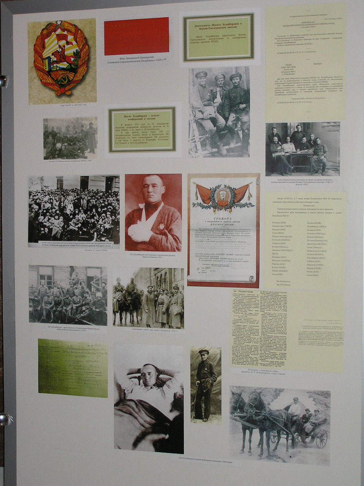
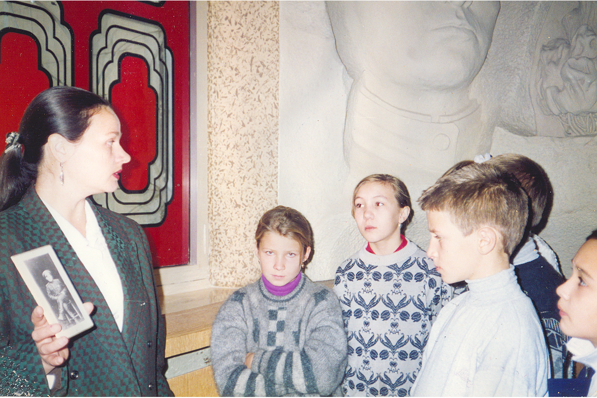

---
{
  "title": "Фотогалерея — Уфа литературная",
  "breadcrumbs": [
    {
      "label": "О проекте",
      "href": "../../index.html"
    },
    "Фотогалерея"
  ]
}
---
<h1 class="page-title">Фотогалерея</h1>
    <p>Шагит Худайбердин</p>
    <nav aria-label="Подразделы галереи" class="section-list">
      <a href="../gallery-37/">
        <strong>Музей, премия</strong>
        <small>(23)</small>
      </a>
      <a href="../gallery-38/">
        <strong>Экскурсия по мемориальному уголку</strong>
        <small>(17)</small>
      </a>
    </nav>
    <p><a href="../gallery/">Все категории фотогалереи</a></p>
    <p>Powered by <a href="http://www.phoca.cz" title="Phoca.cz">Phoca</a> <a href="http://www.phoca.cz/phocagallery" title="Phoca Gallery">Gallery</a></p>
